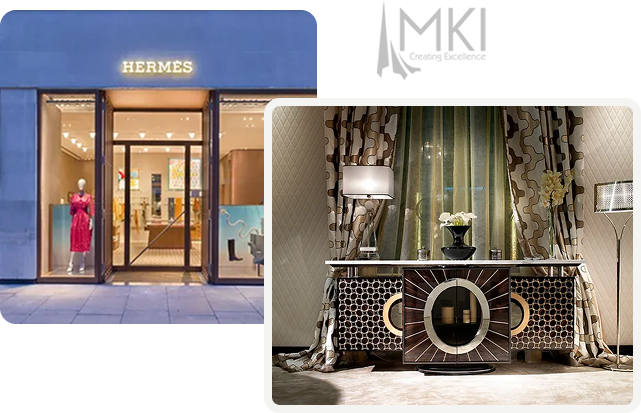

Feature Walls & Seating
Tailored upholstery and wall finishes for your project.
Enquire about upholsteryCurtains · Blinds · Soft Furnishings

Martin Kaye Interiors
Since 1995, we have made bespoke curtains, blinds and soft furnishings for interior designers, hotels and private clients. From our Mill Hill showroom and in-house workshop, we help plan, make and fit the right treatment for each space.
About our studioMade to measure and fitted with care, from a single window to a complete interior project.
Tailored upholstery and wall finishes for your project.
Enquire about upholsteryMade to your specification, with design and fitting support.
Enquire about blindsSee curtain, blind and soft furnishing samples in person. Get in touch to arrange a visit or discuss your project.
Arrange a visit